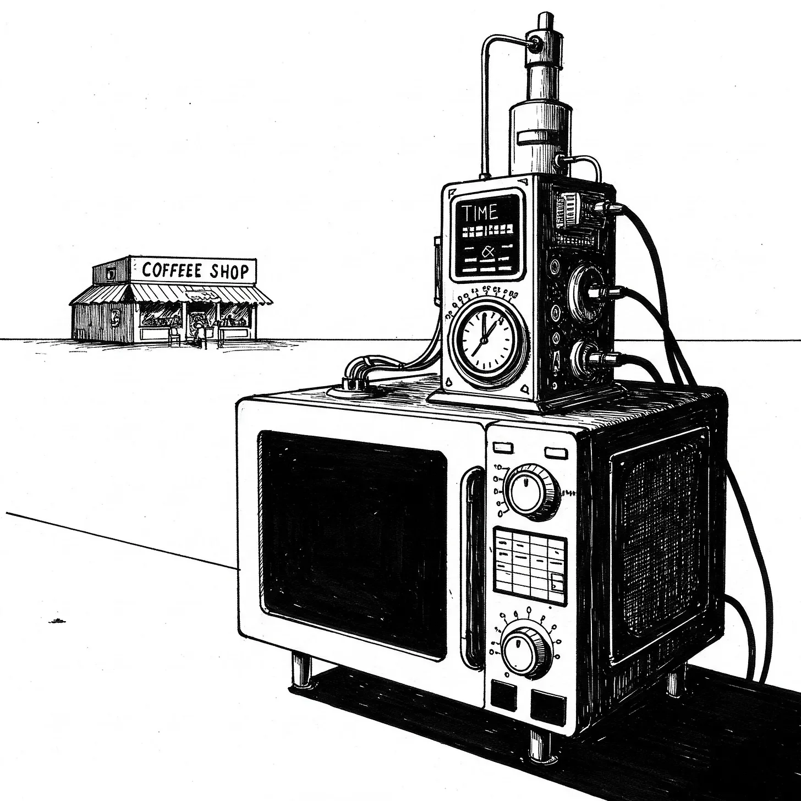

그렉의 차고에 있는 타임머신은 마치 천 개의 TV 디너의 실존적 공포를 소화한 전자레인지처럼 웅크리고 있었다. 그는 카페 바리스타인 카렌에게 그녀의 라벤더 라떼가 “향초가 그의 입 안에서 신경쇠약을 일으킨 것 같은 맛"이라고 말한 후에 이 기계를 만들었다.
[The time machine squatted in Greg’s garage like a microwave that had digested the existential dread of a thousand TV dinners. He’d built it after telling Karen, the café barista, that her lavender latte tasted "like a scented candle had a nervous breakdown in his mouth.”]
그가 좌표를 입력하자 기계는 씩씩거리며 딸깍거렸다: “2017년 3월 17일, 08:47, 자바 헤이븐, 카운터 좌석 #2” - 마치 베이글을 토스트하기 위해 핵융합을 사용하는 것과 같은 도덕적 등가물이었다.
[The machine wheezed and clicked as he punched in the coordinates: “March 17, 2017, 08:47, Java Haven, Counter Seat #2” – the moral equivalent of using nuclear fusion to toast a bagel.]
그의 첫 번째 시간 수정은 의심스러울 정도로 잘 진행되었다. 카렌은 그를 용서했을 뿐만 아니라 무료 쿠키까지 제공했다.
[His first temporal correction went suspiciously well. Karen not only forgave him but offered him a free cookie.]
이것은 그렉의 사과하는 마음속에 위험한 무언가를 불러일으켰다. 곧 그는 모든 사회적 실수를 지우기 시작했다: 선생님을 “엄마"라고 불렀던 때, 서브웨이에서 "마요네즈 더 주세요"라고 열일곱 번이나 요구했던 사건, 그리고 서로 다른 크록스를 신고 화분에 심어진 고사리에게 "보헤미안 랩소디"를 세레나데로 불렀던 그 운명적인 노래방의 밤.
[This sparked something dangerous in Greg’s apologetic heart. Soon he was erasing every social hiccup: the time he’d called his teacher "mom,” the Subway incident where he’d demanded “more mayo” seventeen times, and that fateful karaoke night when he’d serenaded a potted fern with “Bohemian Rhapsody” while wearing mismatched Crocs.]
역사 기록에는 설명할 수 없는 소급적 팁 증가와 완벽하게 실행된 하이파이브의 급증이 기록되기 시작했다.
[Historical records began noting an inexplicable surge in retroactive tipping and perfectly executed high-fives.]
고장은 중학교 졸업앨범 서명(“멋지게 지내 - 그렉, 수학적 확률과 함께”)을 수정하려는 시도 중에 발생했다.
[The malfunction occurred during his attempt to revise his middle school yearbook signature (“Stay cool - Greg, with mathematical probability”).]
기계가 경련을 일으키며 그를 1348년 페스트가 한창인 피렌체로 던져버렸다. 그는 재채기를 했다. 새 모양 마스크를 쓴 상인이 그렉의 네온색 패니팩을 마치 악마의 패션 선택을 목격한 것처럼 쳐다보았다. “제 페스트 보험을 확인하러 왔어요, 음, 그냥,” 그렉이 뒤로 물러서며 볼펜을 실수로 떨어뜨리면서 더듬거렸다.
[The machine convulsed and hurled him into 1348 Florence, mid-plague. He sneezed. A merchant wearing a bird-mask stared at Greg’s neon fanny pack as if witnessing the devil’s own fashion choice. “Just checking on my, uh, plague insurance,” Greg stammered, accidentally dropping his ballpoint pen while backing away.]
이후 르네상스 미술 3세기 동안 설명할 수 없는 필기구들이 의심스러울 정도로 많이 등장하게 되었다.
[Three centuries of Renaissance art would later feature suspicious numbers of inexplicable writing implements.]
요즘 그렉은 자신의 과거를 지우려 했던 시도들을 지울 수 있는 기계를 발명하려고 차고에서 시간을 보낸다. 현대 사회 진화학 교수가 된 카렌은 2020년대 초의 위대한 예의 급증에 대해 강의한다.
[These days, Greg haunts his garage, trying to invent a machine to erase his attempts at erasing his past. Karen, now a professor of Modern Social Evolution, lectures about the Great Politeness Surge of the early 2020s.]
이제 역사적 명소가 된 자바 헤이븐의 에스프레소 머신에는 명판이 붙어 있다: “최초의 시간적 사과가 일어난 장소, 2017-2017-2017-2017…” 양자 얽힘을 통해 의식을 얻게 된 화분 속 고사리는 현재 줄리아드에서 퀸의 음반에 관한 마스터 클래스를 가르치고 있다.
[The espresso machine at Java Haven—now a historical landmark—bears a plaque: “Site of the First Temporal Apology, 2017-2017-2017-2017…” The potted fern, having achieved sentience through quantum entanglement, now teaches a master class on Queen’s discography at Juilliard.]